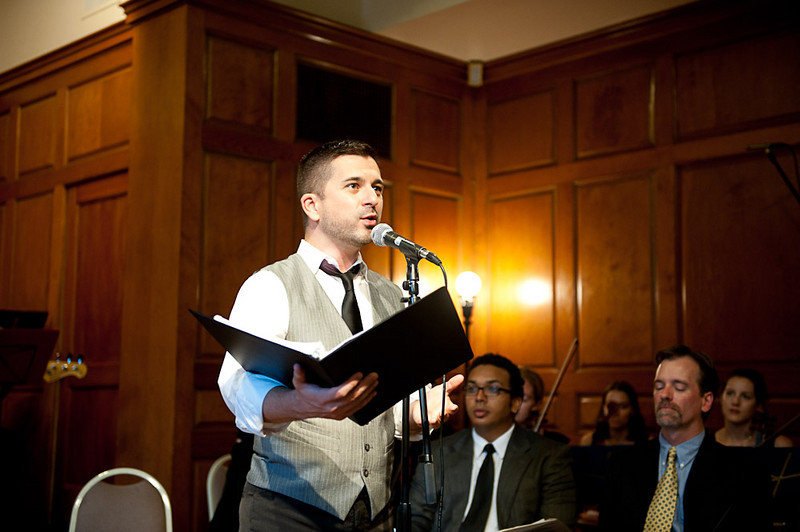
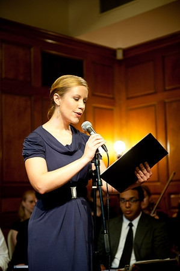
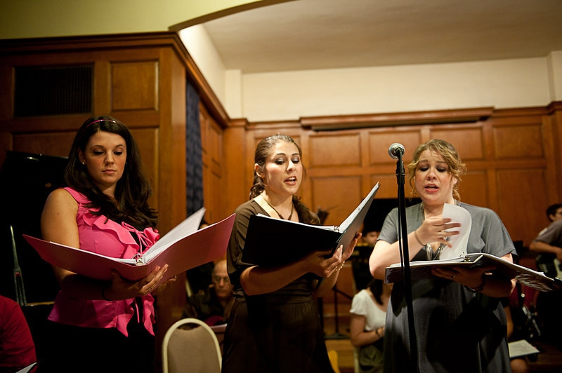
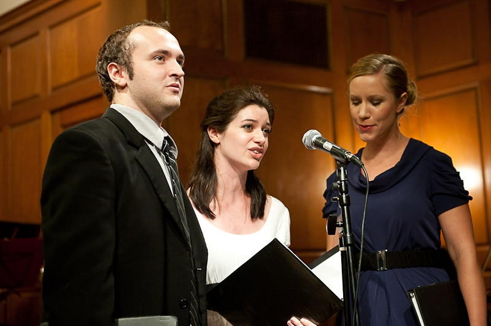
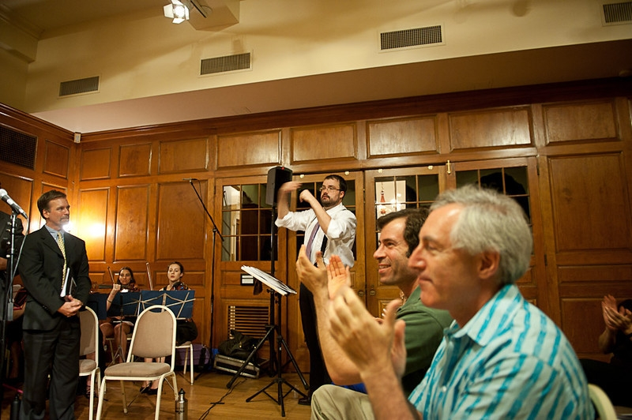
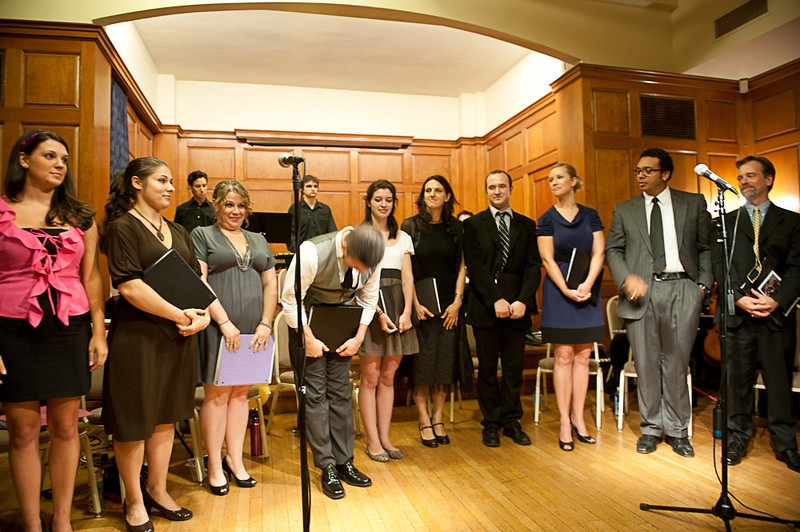

Persephone
A Musical Allegory for the Stage
Persephone is in the running for a $25,000 grant from the Pepsi Refresh Project!
http://www.refresheverything.com/persephone
Winning one of the 15 available grants would give us the resources to mount a week-long run of fully produced performances - lights, sets, costumes, the full orchestra, and all - in an off-Broadway theater in Manhattan in early 2012.
This project provides charitable funding to communities, education, and the arts and we're very proud to have been chosen by PepsiCo to make it through the first phase of consideration. This phase is all about public support - so we need your help!
Unlike the previous appeal via Kickstarter, we don't need your money, we just need your vote! All you have to do is click on "Vote for this idea" at the link above, and then register through your Facebook page or by filling out some basic information. Only the top 15 vote-getters at each grant level will be funded, so please vote early and vote often!
------------------------------------------------------------------------------------------------------------------------------------------------------------------------------------------------------------------------
On Wednesday, July 21st, the Alliance of Resident Theaters in Fort Greene, Brooklyn, hosted a Concert Performance of Persephone, made possible by the Puffin Foundation and Brooklyn Arts Council.
See video clips on the "Demonstration Recordings" page.
Photography by Chris Davis Cina:






_______________________________________________________________
The Persephone listening party at New World Stages on December 10th was a smashing success. Thanks to Drew Citron, for her lovely live performance of "The Way He Can", and to eveyone who attended!
_______________________________________________________________
Join the Persephone Email List! For updates, and invitations to future events send an email
with the subject line "Persephone Mailing List" to davidhoffmanmusic@gmail.com